Mathematics
Table of Contents
- 1. Use of Mathematics in Design Engineering
- M1 - Confident use of numbers and percentages
- M2 - Use of ratios
- M3 - Calculation of surface areas and/or volumes
- M4 - Use of trigonometry
- M5 - Constuction, use and/or analysis of graphs and charts
- M6 - Use of coordinates and geometry
- M7 - Use of statistics and probability as a measure of likelihood
1 Use of Mathematics in Design Engineering
M1 - Confident use of numbers and percentages
- Calculation of quantities of materials, components, costs and size with consideration of percentage profits and tolerances as appropriate.
- Substitute numerical values into and rearrange learnt formulae and expressions.
- Confident use of decimal and standard form.
- Calculate positive integer powers and exact roots.
- e.g. 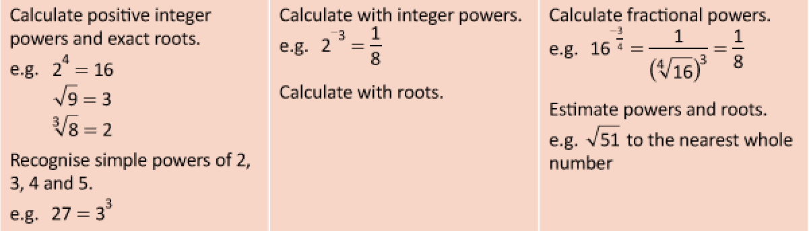
- Interpret and order numbers expressed in standard form. Convert numbers to and from standard form
- e.g. 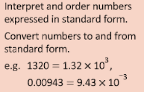
- Round answers to an appropriate level of accuracy.
- Use inequality notation to write down an error interval for a number or measurement rounded or truncated to a given degree of accuracy.
- Calculate the upper and lower bounds of a calculation using numbers rounded to a known degree of accuracy.
- e.g. 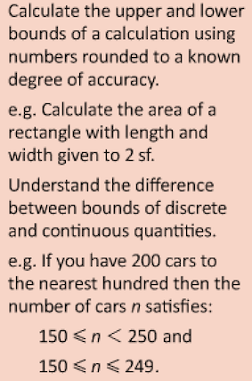
- Formulate simple formulae and expressions from real-world contexts.
- e.g. 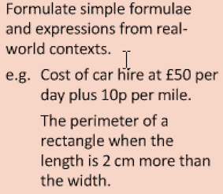
- Substitute positive numbers into simple expressions and formulae to find the value of the subject and into more complex formulae, including powers, roots and algebraic fractions.
- e.g. 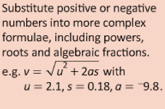
- Rearrange formulae to change the subject, including cases where the subject appears twice, or where a power or reciprocal of the subject appears.
- e.g. 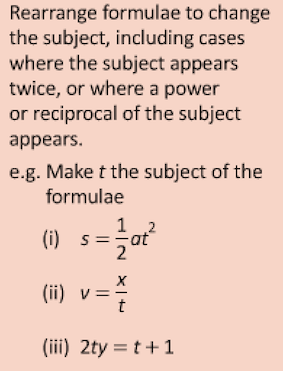
- Understand and use the symbols <, ≤, > and ≥. Solve linear inequalities in one variable.
- e.g. 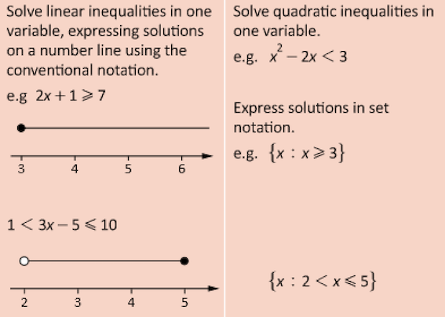
- Use and convert standard units of measurement for length, area, volume/capacity, mass, time and money and in algebraic contexts.
- Use and convert standard units of measurement for length, area, volume/capacity, mass, time and money and in algebraic contexts. Use and convert simple compound units (e.g. for speed, rates of pay, unit pricing) and (e.g. density, pressure). Know and apply in simple cases: speed = distance ÷ time and density = mass ÷ volume. Use and convert compound units in algebraic contexts.
- e.g. 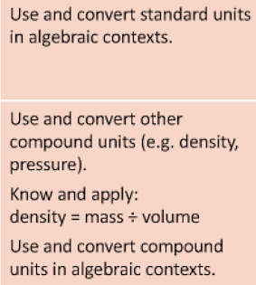
- Substitute positive numbers into simple expressions and formulae to find the value of the subject or negative numbers into more complex formulae, including powers, roots and algebraic fractions.
- Use and convert simple compound units (e.g. for speed, rates of pay, unit pricing) and (e.g. density, pressure). Know and apply in simple cases: speed = distance ÷ time and density = mass ÷ volume. Use and convert compound units in algebraic contexts.
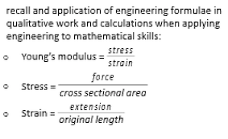
- Pressure = force / area
- Wave frequency = 1 / period
- Turning effects, torque = Fd , or moment = Fx
M2 - Use of ratios
- Understand and use ratios in the scaling of drawings and pattern grading.
- Understand and apply fractions and percentages when analysing data, survey responses and user questionnaires given in tables and charts.
- Calculate percentages e.g. with profit, waste saving calculations or comparing measurements.
- Recognise and use equivalence between simple fractions and mixed numbers.
- e.g. 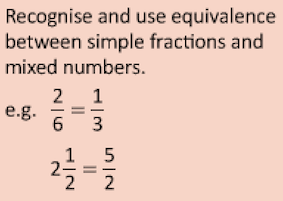
- Calculate a fraction of a quantity.
- e.g. 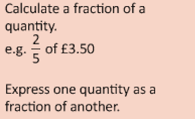
- Convert between fractions, decimals and percentages.
- e.g. 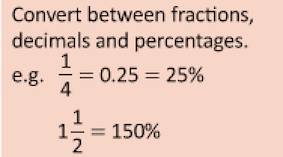
- Calculate a percentage of a quantity, and express one quantity as a percentage of another.
- Express percentage change as a decimal or fractional multiplier. Apply this to percentage change problems (including original value problems).
- e.g. 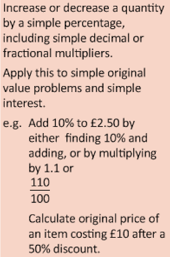
- Find the ratio of quantities in the form a : b and simplify. Find the ratio of quantities in the form 1 : n.
- e.g. 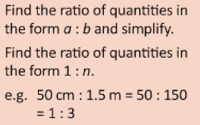
- Split a quantity into two parts given the ratio of the parts. Express the division of a quantity into two parts as a ratio. Calculate one quantity from another, given the ratio of the two quantities.
- e.g. 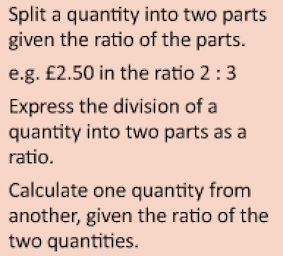
- Interpret a ratio of two parts as a fraction of a whole.
- e.g. 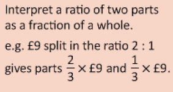
- Solve simple ratio and proportion problems. e.g. Adapt a recipe for 6 for 4 people.
- Compare lengths, areas and volumes using ratio notation and scale factors. Understand the relationship between lengths, areas and volumes of similar shapes.
- e.g. 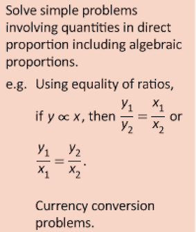
M3 - Calculation of surface areas and/or volumes
- Determining quantities of materials by surface area.
- Calculate the overall surface area of different shapes, such as, cuboids, cylinders and spheres to determine quantities of material and feasibility analysis.
- Calculate the volume of different shapes, such as, cuboids, cylinders and spheres to determine suitability of objects and products.
- Recognise and know the properties of the cube, cuboid, prism, cylinder, pyramid, cone and sphere.
- Calculate the surface area and volume of cuboids and other right prisms (including cylinders).
- Calculate the surface area and volume of spheres, cones and simple composite solids (formulae will be given).
- Calculate the surface area and volume of a pyramid (the formula area of base × height will be given).
M4 - Use of trigonometry
- Calculate the sides and angles of objects to determine structural integrity, marking out and direction of movement.
- Determining projectile motion and direction of movement.
- Determining how to resolve force vectors using F(x) = F cosi and F(y) = F sinθ.
- Know the basic properties of the square, rectangle, parallelogram, trapezium, kite and rhombus. Use these facts to find lengths and angles in rectilinear figures and in simple proofs. Use these facts in more formal proofs of geometrical results.
- Know, derive and apply Pythagoras’ theorem to find lengths in right-angled triangles in 2D figures. Apply Pythagoras’ theorem in more complex figures, including 3D figures.
- e.g. 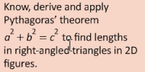
- Know and apply the trigonometric ratios, sinθ, cosθ and tanθ and apply them to find angles and lengths in right-angled triangles in 2D figures. Apply the trigonometry of right-angled triangles in more complex figures, including 3D figures.
- Know the exact values of sinθ and cosθ for θ = 0°, 30°, 45°, 60° and 90°. Know the exact value of tanθ for θ = 0°, 30°, 45° and 60°.
- Know and apply the sine rule to find lengths and angles.
- Know and apply the cosine rule to find lengths and angles.
- e.g.

M5 - Constuction, use and/or analysis of graphs and charts
- Representation of data used to inform design decisions and evaluation of outcomes.
- Presentation of market data, user preferences, outcomes of market research as part of product design, fashion and textiles.
- Interpret and extract appropriate data.
- Work with x- and y- coordinates in all four quadrants.
- e.g. 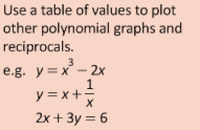
- Construct and interpret graphs in real-world contexts. Recognise and interpret graphs that illustrate direct and inverse proportion.
- Interpret and construct charts appropriate to the data type, including frequency tables, bar charts, pie charts and pictograms for categorical data, vertical line charts for ungrouped discrete numerical data. Interpret multiple and composite bar charts. Design tables to classify data. Interpret and construct line graphs for time series data, and identify trends (e.g. seasonal variations).
- Interpret and construct diagrams for grouped data as appropriate, i.e. cumulative frequency graphs and histograms (with either equal or unequal class intervals).
- Calculate the mean, mode, median and range for ungrouped data.
- Find the modal class, and calculate estimates of the range, mean and median for grouped data, and understand why they are estimates.
- Describe a population using statistics.
- Make simple comparisons.
- Compare data sets using ‘like for like’ summary values.
- Understand the advantages and disadvantages of summary values.
- Calculate estimates of mean, median, mode, range, quartiles and interquartile range from graphical representation of grouped data.
- Draw and interpret box plots.
- Use the median and interquartile range to compare distributions.
- Plot and interpret scatter diagrams for bivariate data.
- Recognise correlation.
- Interpret correlation within the context of the variables and appreciate the distinction between correlation and causation.
- Draw a line of best fit by eye, and use it to make predictions.
- Interpolate and extrapolate from data, and be aware of the limitations of these techniques.
- Identify an outlier in simple cases.
- Appreciate there may be errors in data from values (outliers) that do not ‘fit’.
- Recognise outliers on a scatter graph.
- Calculate or estimate gradients of graphs, and interpret in contexts such as distance-time graphs, velocity-time graphs and financial graphs.
- Apply the concepts of average and instantaneous rate of change (gradients of chords or tangents) in numerical, algebraic and graphical contexts.
- Calculate or estimate areas under graphs, and interpret in contexts such as distance-time graphs, velocity-time graphs and financial graphs.
- Present and interpret velocity/time graphs, stress-strain and resistance-temperature graphs.
- Representation of frequency, period, amplitude and phase.
M6 - Use of coordinates and geometry
- Use of datum points and geometry when setting out design drawings, when setting out patterns and within engineering drawings.
- Present accurate 2D and 3D graphics to communicate design solutions.
- Use x- and y-coordinates in plane geometry problems, including transformations of simple shapes.
- Interpret plans and elevations of simple 3D solids.
- Construct plans and elevations of simple 3D solids and representations (e.g. using isometric paper) of solids from plans and elevations.
- Understand addition, subtraction and scalar multiplication of vectors.
- Use vectors in geometric arguments and proofs.
- Construct and interpret scale drawings.
M7 - Use of statistics and probability as a measure of likelihood
- Interpret statistical analyses to determine user needs and preferences.
- Use data related to human scale and proportion to determine product scale and dimensions and sizes and dimensions of fashion products.
- Understanding of dimensional variations in mass produced components.
- Defects in batches and reliability linked to probabilities.
- Use the 0–1 probability scale as a measure of likelihood of random events, for example, ‘impossible’ with 0, ‘evens’ with 0.5, ‘certain’ with 1.
- Record, describe and analyse the relative frequency of outcomes of repeated experiments using tables and frequency trees.
- Use relative frequency as an estimate of probability.
- Understand that relative frequencies approach the theoretical probability as the number of trials increases.
- Use the addition law for mutually exclusive events.
- Use p(A) + p(not A) = 1.
- Derive or informally understand and apply the formula.
- p(A or B) = p(A) + p(B) - p(A and B)
- Use tree diagrams and other representations to calculate the probability of independent and dependent combined events.
- Understand the concept of conditional probability, and calculate it from first principles in known contexts. Derive or informally understand and apply the formula p(A and B) = p(A given B)p(B).
- Know that events A and B are independent if and only if p(A given B) = p(A).